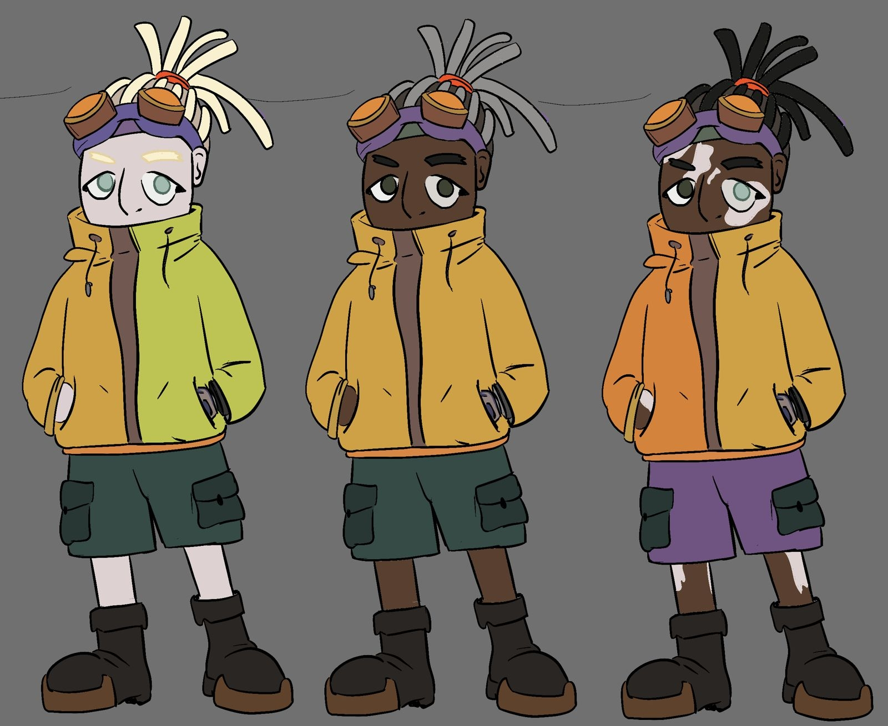
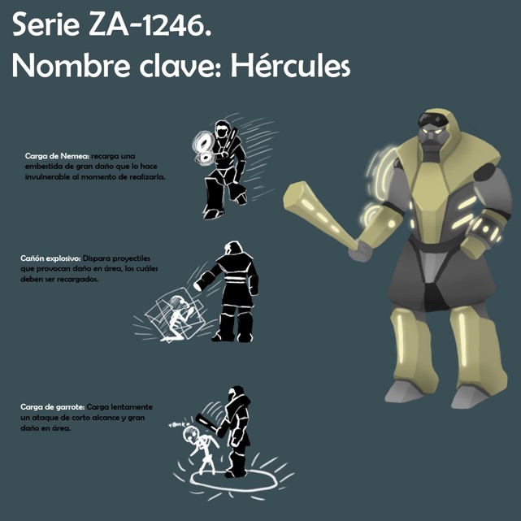
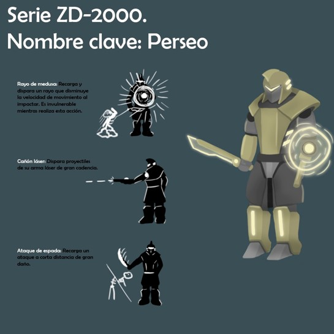

Ambydextrous es un videojuego 3D de acción y aventura para computadoras,
donde los jugadores tomarán el papel de los hermanos Amari e Izara,
los cuales se adentrarán en las ruinas de una antigua ciudad que los
hará explorar a través de otros mundos y dimensiones. A través de mazmorras
generadas aleatoriamente de manera procedural, los hermanos atravesaran
múltiples dimensiones partiendo desde las ruinas de su ciudad, hasta la
nave espacial donde se encuentra el jefe de los aliens.
En cada partida del juego las mazmorras se generan de manera procedural,
en donde el jugador podrá encontrar cofres con armas, máquinas expendedoras
de poderosos hechizos, combatir diversos enemigos e incluso, resolver
posibles acertijos dentro de las habitaciones.
En este devlog, se presentara el progreso del videojuego a lo largo del tiempo.
Semana 1
El proyecto empezo un viernes 9 de agosto de 2024
Todo comenzo como un proyecto de pasion, inspirado en videojuegos de rol como
SMT: Persona y Bioshock, queria desarrollar un videojuego en primera persona
de exploracion de mazmorras, con elementos de accion y aventura.
Habian muchas ideas y conceptos que queria implementar, mas sin embargo
tenia una idea mas o menos clara de lo que hoy se estaria formando como Ambydextrous
Semana 2
Eventualmente, le mostre el proyecto a mis amigos, los cuales se vieron
interesados en participar en el proyecto.
Ya consolidados como grupo, definimos nuestros roles, bajo el marco de diseñadores de
personajes, mapas y enemigos, ademas del programador principal, el cual termino siendo mi persona
El arte conceptual de nuestro primer enemigo El primer diseño de Izara es creado!
Semana 3
Empezamos a trabajar mas periodicamente en el juego, ya que ahora teniamos una vision mas
clara del mundo y de sus personajes
Amari ha nacido
Ademas de esto, Miguel, nuestro talentoso compositor, empieza a definir el estilo musical
para lo que seria la banda sonora de nuestro videojuego
Semana 4
Esta fue una de las semanas mas elementales en el desarrollo, pues por fin
tenemos un concepto claro de nuestros personajes principales y los lugares
que ellos explorarian
Vemos a los hermanos Amari e Izara juntos por primera vez

Semana 5
Siguiendo con el avance de los hermanos, se consolido el concepto de una fusion
entre los dos, el cual tambien tuviera la fusion de generar sinergias con las armas y
los hechizos
El primer concepto de la fusion
Ademas de esto, el concepto del enemigo central se consolida como el "Capitolio", una
raza alienigena que invade mundos para explotar sus recursos naturales


Semana 6
En esta semana terminamos el arte conceptual de la fusion
Semana 7
En esta semana el progreso no fue muy bien documentado, pues marca
nuestra primera semana de parciales en la universidad
Semana 8
En este punto del desarrollo, empezamos a modelar en 3D los
conceptos planteados
Izara en 3 dimensiones!
Semana 9
Se consolida el arte conceptual de los enemigos basicos, pues
para este entonces teniamos que empezar a trabajar en una demo
o algo medianamente jugable/entregable
Sorprendentemente, estos conceptos fueron traducidos a 3D en esta misma semana,
completos con animaciones ademas!
Semana 10
Otra semana de trabajo extensivo, donde modelados el resto de enemigos
basicos para la demo (ironicamente, no quedaron en el primer prototipo
a pesar de estar incluidos en el juego)
Semana 11
En esta semana se realizo nuestra primera demo jugable!